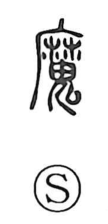

魔

Uncategorized
Kun: | On: ma
demon ・ devil ・ evil spirit
Explanation
A phono-semantic character: the element 麻 provides the sound ma and points toward the Buddhist loan name 魔羅 (Mara), a phonetic rendering of the Sanskrit Mara, the force that obstructs enlightenment. From this background the graph came to signify the oni or devil—an evil presence that brings calamity and tempts people onto harmful paths.